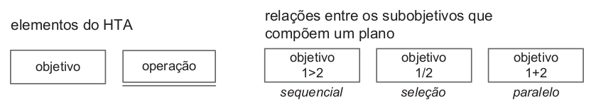

Análise de Tarefas
Introdução
A análise de tarefas é um método utilizado na área de Interação Humano-Computador para compreender qual o trabalho dos usuários, como eles o realizam e por que o fazem.Nesse contexto, o trabalho é definido como os objetivos que os usuários buscam alcançar ao realizar uma atividade [1]. Essa análise é fundamental para o design e avaliação de sistemas interativos, pois ajuda a garantir que esses sistemas sejam projetados para atender às necessidades e objetivos dos usuários e para facilitar suas tarefas e atividades diárias.
A análise de tarefas pode ser usada em diferentes atividades, como a análise da situação atual, o design de um novo sistema computacional ou a avaliação de um sistema existente. Neste artefato, apresentamos uma análise de tarefas para um sistema já implementado e em uso, o que torna a análise mais viável e os seus resultados mais confiáveis.
Com o intuito de explorar diferentes técnicas, foram avaliadas as tarefas de "Emitir nota fiscal eletrônica" e "Consultar nota eletrônica" por meio de duas metodologias diferentes, a saber: Análise Hierárquica de Tarefas (HTA) e GOMS (Goals, Operators, Methods and Selection Rules). As tarefas selecionadas compõem as duas funcionalidades mais utilizadas pelos usuários do aplicativo, conforme apontam os dados coletados durante a elaboração do perfil do usuário.
Objetivos
O objetivo principal deste artefato e documento é aplicar e analisar as tarefas realizadas com intuito de verificar se há um entendimento do usuário em relação às tarefas, entender suas habilidades, validação de design, entre outros pontos baseados nas três tarefas principais que foram identificadas durante a realização das entrevistas e questionários aplicados.
Análise Hierárquica de Tarefas (HTA)
Essa metodologia foi desenvolvida na década de 60, com o objetivo de entender habilidades e competências presentes na execução de tarefas complexas e não repetitivas e auxiliar na identificação de problemas de desempenho. Seu enfoque encontra-se em relacionar o que as pessoas fazem, suas motivações e consequências de suas tarefas.
A análise hierárquica de tarefas possui os seguintes elementos:
Tarefa: qualquer parte de um trabalho a ser realizado;
Objetivo: um estado final, que pode ser definido por eventos ou valores fisicamente observáveis;
Subobjetivo: um objetivo de alto nível é dividido em subobjetivos, por exemplo o objetivo "Emitir nota fiscal" possui, dentre outros, os seguintes subobjetivos: "Preencher o documento que comprova o serviço prestado";
Plano: o conjunto de subobjetivos de um objetivo e suas relações consiste em um plano;
Operação: circunstâncias de ativação do objetivo (input ou entrada), atividades ou ações (actions) para alcançá-lo e condições que indicam seu atingimento (feedback)
A análise hierárquica de tarefas pode ser representada na forma textual, por meio de uma tabela, por exemplo, ou por um diagrama. No segundo caso, utiliza-se a notação representada na Figura 1.
Figura 1: Elementos do diagrama

Fonte: Simone, 2010
Análise da Tarefa: Emitir Nota Fiscal Eletrônica
A tarefa "Emitir nota fiscal eletrônica" é uma das principais tarefas que o usuario realiza no sistema, já que é uma funcionalidade principal. A tabela 1 e a figura 2 apresentam a análise hierárquica dessa tarefa em sua forma textual e de diagrama, respectivamente.
Tabela 1: Análise Hierárquica de Tarefas para o objetivo "Emitir nota fiscal"
| Objetivos/Operações | Problemas e recomendações |
|---|---|
| 0. Emitir uma nota fiscal eletrônica (1 > 2) |
input: Formulario de emissão de nota fiscal eletrônica feedback: Uma nova nota fiscal de serviço é emitida. plano: informar dados da nota fiscal, confirmar assinatura e depois baixar a nota. |
| 1. Informar dados da nota eletronica (1 + 2) |
plano Informar cpf/cnpj do prestador de serviços e razão social do prestador de serviços e Informar descrição dos serviços, Item LC, atividade municipio, valor total dos serviços e descontos condicionais. |
| 1.1 Informar cpf/cnpj do prestador de serviços e razão social do prestador de serviço | |
| 1.2 Informar descrição dos serviços, Item LC, atividade municipio, valor total dos serviços e descontos condicionais. | |
| 2. Confirmação de assinatura para emissão da nota (1 / 2) |
plano: Confirmação via cpf e senha ou certificado digital para validação e veracidade da nota. |
| 2.1 Confirmação via cpf e senha | |
| 2.2 Confirmação via certificado digital | |
| 3 Baixar a nota fiscal | plano: Baixar a nota fiscal eletronica emitida autenticada. |
Fonte: Autor, 2023
Figura 2: Análise Hierárquica da Tarefa Emitir Nota Fiscal
Fonte: Autor, 2023
Análise de Tarefa: Cancelar Nota Fiscal
A análise da tarefa de cancelar a nota fiscal, foi identificada no questionário do perfil de usuário como sendo a 3º atividade mais utilizada pelo sistema, a análise HTA da tarefa está representada na tabela 2 e na figura 3
Tabela 2: Análise Hierárquica da Tarefa Cancelar Nota Fiscal
| Objetivos/Operações | Problemas e recomendações |
|---|---|
| 0. Cancelar Nota Fiscal 1>2>3>4 | input: nota a ser cancelada, com justificativa, motivo e assinatura feedback: mensagem de registro gravado plano: consultar tabela, em seguida identificar a nota a ser cancelada, informar justificativa e motivo (duplicidade da nota ou serviço não prestado), enviar e assinar solicitação (senha ou certificado digital) |
| 1. Consultar NFS-e emitidas | |
| 2. Identificar nota a ser cancelada | |
| 3. Cancelar Nota Identificada 1>2 | plano: informar a justificativa por texto e informar o motivo |
| 3.1. Informar justificativa (texto) | |
| 3.2. Informar Motivo 1/2 | input: seleção entre duplicidade da nota ou serviço não prestado |
| 3.2.1 Informar duplicidade de nota | |
| 3.2.2 Informar serviço não prestado | |
| 4. Enviar solicitação de cancelamento | input: assinatura da solicitação |
| 4.1 Assinar solicitação 1/2 | plano: assinar solicitação por meio de senha ou certificado digital |
| 4.1.1. Assinar com senha | |
| 4.1.2. Assinar com certificado digital |
Fonte: Autor, 2023
Figura 3: Análise Hierárquica da Tarefa Cancelar Nota Fiscal
Fonte: Autor, 2023
Objetivos, Operadores, Métodos e Regras de Seleção (GOMS)
De acordo com Barbosa et al [1], o conjunto de modelos GOMS (Goals, Operators, Methods and Selection Rules - Objetivos, Operadores, Métodos e Regras de Seleção), visa analisar o desempenho de usuários competentes de sistemas computacionais realizando tarefas dentro de sua competência e sem cometer erros. Compõem a família de modelos GOMS algumas técnicas, dentre as quais a o modelo CMN-GOMS foi selecionado para a análise da tarefa emitir uma nota fiscal. Esse método representa as tarefas por meio de uma linguagem de pseudocódigo, indicando a ordem sequencial dos objetivos. Esse modelo visa prever a sequência dos operadores e o tempo de execução desempenhado em uma tarefa.
Análise da Tarefa: Consultar Nota Eletrônica de Serviço
O modelo GOMS foi utilizado para analisar a tarefa "Consultar Nota Eletrônica", sendo o escopo de avaliação a situação em que um usuário desejar a partir da plataforma consultar uma nota fiscal de serviço eletrônica.
GOAL 0: Consultar Nota Fiscal Eletrônica
GOAL 1: Realizar login na plataforma
OP. 1.1: Digitar seu cpf e senha
OP. 1.2: Logar através do certificado digital
GOAL 2: Escolher a opção Consultar Nota Eletrônica
OP. 2.1: escolher a série
OP. 2.2: preencher os Números da nota
GOAL 3: Localizar a nota Fiscal
OP. 3.1: Preencher ou não informações adicionais
OP. 3.2: selecionar o botão de localizar
Referências
[1]: SIMONE DINIZ JUNQUEIRO BARBOSA, BRUNO SANTANA DA SILVA, Interação Humano-Computador, 1a. Edição, Editora Campus, 2010. Publicado em: 03/05/2021.
Histórico de revisão
| Versão | Data | Descrição | Autor(es) | Revisores |
|---|---|---|---|---|
0.0 |
06/05/2023 | Criação do arquivo | Arthur Trindade | Miguel Moreira |
0.1 |
07/05/2023 | Adição da introdução | Arthur Trindade | Miguel Moreira |
0.2 |
08/05/2023 | Adição da Analise | Gabriel de Souza Fonseca Ribeiro | Arthur Trindade |
0.3 |
20/05/2023 | Adição de Tarefa e Correções | Júlio César | Arthur Trindade |
0.4 |
23/05/2023 | Corrige HTA Cancelar Nota | Júlio César | Arthur Trindade |
0.5 |
03/07/2023 | Adiciona introdução do cancelar nota | Júlio César | Arthur Trindade |
0.6 |
03/07/2023 | Verficação PC2 | Marcus Vinicius | Júlio César |
0.7 |
04/07/2023 | correção do HTA | Gabriel de Souza Fonseca Ribeiro | Arthur trindade |